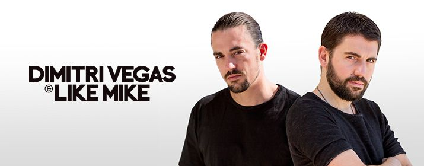

Mainstage: 22:00-23:00!
Die Brüder Dimitri und Mike Thivaios alias Dimitri Vegas & Like Mike sind ein belgisches
DJ-Duo mit griechischer Abstammung. Mit ihrer Musik vertreten sie hauptsächlich die
Genres Big Room, Electro House und Progressive House. In den DJ Mag Top 100 belegen
sie aktuell Rang 2.
Nachdem im Jahr 2008 bekanntere DJs wie Axwell aufmerksam wurden und ihre
Tracks remixten, wurden Dimitri und Mike einem größeren Publikum bekannt, sodass
sie Remix-Anfragen von Künstlern wie Jennifer Lopez, Lady Gaga, LMFAO oder Snoop
Dogg erhielten.
2010 wurden sie schließlich ausgewählt, für das Tomorrowland-Festival in Belgien die
offizielle Hymne zu produzieren. Seit 2011 erschienen neben der Tomorrowland-Hymne
The Way WeSee the World, welche gemeinsam mit Afrojack und NERVO produziert
wurde, etliche eigene Tracks wie Madagascarmit Yves V und Angger Dimas, Phat
Brahmsmit Steve Aoki, sowie Momentummit Regi. 2013 folgte mit Chattahoocheedie
nächste Tomorrowland-Hymne der Brüder.
2014 erschien G.I.P.S.Y. in Zusammenarbeit mit dem italienischen DJ-Duo Boostedkids.
Auch die Single Tremor in Zusammenarbeit mit Martin Garrix, die eine Mischung des
Bigroom- und Melbourne-Bounce-Stils darstellt, wurde ein Erfolg. Tremorkonnte unter
anderem in Österreich, Belgien und erstmals auch in Großbritannien in die Charts
einsteigen.
Ebenfalls 2014 komponierten die Brüder ein weiteres Mal die offizielle Tomorrowland
Hymne Waves, diesmal in Zusammenarbeit mit W&W.
Dimitri Vegas & Like Mike treten gelegentlich zusammen mit Steve Aoki als 3 Are
Legendauf.
Die erste Single im Jahr 2015 trägt den Titel Tales of Tomorrowund entstand in
Zusammenarbeit mit Fedde Le Grand und Julien Perretta. Kurz darauf wurde die Single
Loudergemeinsam mit dem italienischen DJ-Duo Vinai aufgenommen.
Für 2015 wurde ein Album angekündigt, auf dem unter anderem Kooperationen mit
Stromae und Major Lazer, sowie zahlreiche bereits auf Liveshows gespielte Songs zu
finden sein sollen.
Ihr aktuellstes Projekt ist The Humin Kollaboration mit Ummet Ozcan.